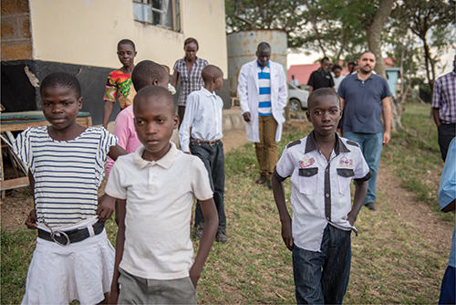
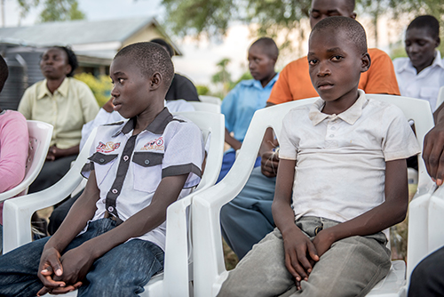
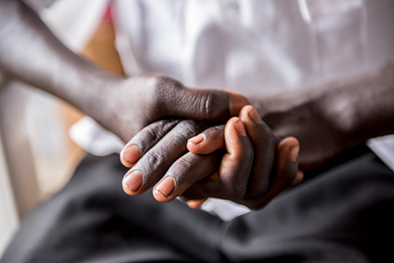

FACING STIGMA
Video Story 1
Story 1 information
“Eventually he died,” continues Collins grimly, “…last year.” Collins, who is also living with HIV, keeps his own status secret. He does not want to face the same rejection.
 The one place at which Collins can talk openly about HIV and other hardships is with his peers at the Kandiege Health Center (supported by the Elizabeth Glaser Pediatric AIDS Foundation), where he picks up his medication. Once a week, Collins attends the Kandiege Ariel Club, a psychosocial support group with about two-dozen other adolescents living with HIV. Together, they learn about HIV—what it is, how to treat it, how to live with it. The group gives them space to share their experiences and emotions with peers who fully understand many of their difficulties and triumphs.
 “I came to know about my HIV status from my grandmother,” says Collins. “When I was about 2 years old, my mother died. Then eventually, I fell sick. When I was about 5 years old, I was diagnosed as HIV-positive here at Kandiege. I continued to live with my grandmother until I reached Class 7 [age 12].
“Then my grandmother died, and I lived with my uncle and his wife. They are farmers—they plant crops like maize, beans, and ground nuts. They have tried their best, but they still have not reached good conditions [financially], so I have been sent home for lack of school fees. I have been away from school for some time.”
Collins would like to go to college and eventually become an electrical engineer, but as an orphan living with HIV, he is feeling dejected at the moment. His friendships at the Ariel Club are vital. Along with the stigma of living with HIV, other group members know what it is like to grow up without parents and are also experiencing financial insecurity.
 Grace is a 15-year-old who was infected with HIV at the age of 8 when she was raped. “I suffered a lot,” says Grace. “I was afraid. I just kept quiet.” Grace secretly bore the trauma of her sexual assault until she was finally diagnosed with HIV at the age of 12 and received counseling at Kandiege.
Support at home is limited. Grace lives with her grandmother and four younger siblings. Her father died of pneumonia when she was a little girl and her mother left shortly after “for greener pastures” in Nairobi.
“My grandmother is very old. She just stays at home. I am the one who—after school—I look out for the family. Grandmother is not able to sustain our lives, so I fetch firewood and sell it to buy food. I am in school, but for the past two weeks I was sent home for lack of school fees.”
Grace is determined to make it back to school. “I want to be a journalist,” she says, “so that I can teach other girls through the media how to take care of themselves.”
Choose more stories to read.

SARAH IN 10 YEARS